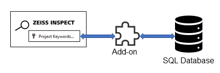
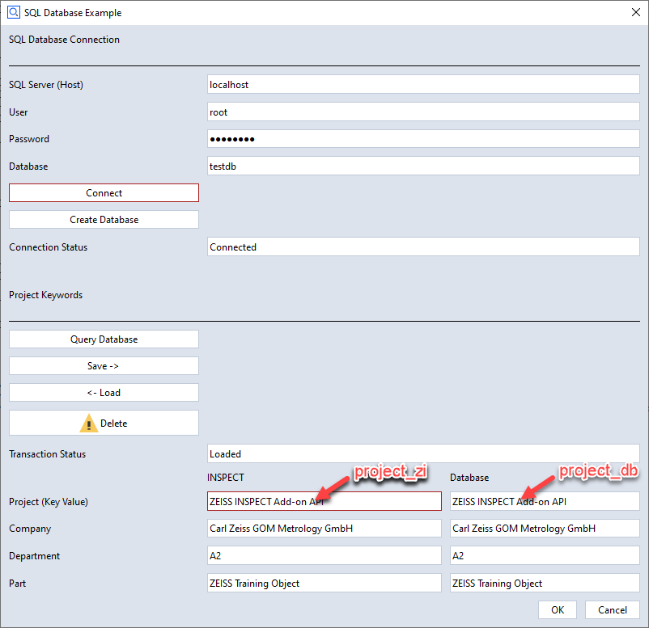

sql_example

Short description
This example demonstrates how to access an SQL database from an Add-on. For demonstration purposes, project keywords are written to or read from a database, respectively.
The database access is implemented using mysql-connector-python. A test database server is set up using MySQL Community Server.
Besides, gom.api.settings is used to save and restore entries made in a dialog.
Highlights

1. Accessing project keywords
A project must be loaded to access project keywords. This is checked with the following code:
if not hasattr(gom.app, 'project'):
gom.script.sys.execute_user_defined_dialog (file='no_project.gdlg')
quit(0)
This Add-on handles the project variables user_project, user_company, user_department and user_part.
For each of these variables, two text widgets are used - one for the value in ZEISS INSPECT (e.g. project_zi) and one for the value in the database (e.g. project_db).
If available, the project keywords are written to the text widgets in the column ‘INSPECT’ (*_zi):
if 'user_project' in gom.app.project.project_keywords:
DIALOG.project_zi.value = getattr(gom.app.project, 'user_project')
The text widget entries in the column ‘INSPECT’ can be edited or loaded from the database (the database entry is selected by ‘Project’).
Finally the project keywords are updated from the text widgets, if the dialog is closed with the ‘Ok’ button:
try:
RESULT = gom.script.sys.show_user_defined_dialog (dialog=DIALOG)
except gom.BreakError as e:
# Dialog window was closed or 'Cancel' button was pressed
pass
else:
# 'Ok' button was pressed
gom.script.sys.set_project_keywords (keywords = {
'project': RESULT.project_zi,
'company': RESULT.company_zi,
'department': RESULT.department_zi,
'part': RESULT.part_zi
})
2. Installing a test database server
Install the MySQL Community Server as shown in Install MySQL Community Server on Windows.
3. Accessing the database
After the database server has been installed and started, you can try to connect to it, but the ‘Connection Status’ will show ‘Unknown database “<name>”’, because no database has been created yet.
Creating a database
A new database is created using the function create_database(), which calls MySQLConnection.connect().
A connection is established without specifying a database
def create_database(host_name, user_name, user_password, database):
try:
connection = mysql.connector.connect(
host=host_name,
user=user_name,
passwd=user_password
)
except Error as err:
print(f"Error: '{err}'")
return err
The database is created
The SQL command CREATE DATABASE {database} DEFAULT CHARACTER SET 'utf8' is passed as a parameter to the MySQLCursor.execute() method.
cursor = connection.cursor()
try:
cursor.execute("CREATE DATABASE {} DEFAULT CHARACTER SET 'utf8'".format(database))
except mysql.connector.Error as err:
print(f"Failed creating database: {err}")
#return err
else:
print(f"Created database {database}")
The database is selected
Again, the method MySQLCursor.execute() is called — this time with the SQL command USE {database}.
try:
cursor.execute("USE {}".format(database))
except mysql.connector.Error as err:
print(f"Database {database} does not exists.")
print(err)
else:
print(f"Using database {database}")
A database table is created
Table: projects
project_no |
project_name (unique) |
company_name |
department_name |
part_name |
|---|---|---|---|---|
int(11) NOT NULL AUTO_INCREMENT |
varchar(80) NOT NULL UNIQUE |
varchar(80) NOT NULL |
varchar(80) |
varchar(80) NOT NULL |
# Database - projects table
TABLES = {}
TABLES['projects'] = (
"CREATE TABLE `projects` ("
" `project_no` int(11) NOT NULL AUTO_INCREMENT,"
" `project_name` varchar(80) NOT NULL UNIQUE,"
" `company_name` varchar(80) NOT NULL,"
" `department_name` varchar(80),"
" `part_name` varchar(80) NOT NULL,"
" PRIMARY KEY (`project_no`)"
") ENGINE=InnoDB")
The table data structure is passed as the SQL command to the method MySQLCursor.execute().
for table_name in TABLES:
table_description = TABLES[table_name]
try:
print("Creating table {}: ".format(table_name), end='')
cursor.execute(table_description)
except mysql.connector.Error as err:
if err.errno == errorcode.ER_TABLE_EXISTS_ERROR:
print("already exists.")
else:
print(err.msg)
return err
else:
print("OK")
Final steps
The methods MySQLCursor.close() and MySQLConnection.close() are called.
cursor.close()
connection.close()
return None
Connecting the database
The function create_server_connection() creates a connection to the server and selects the database by calling MySQLConnection.connect().
def create_server_connection(host_name, user_name, user_password, database):
connection = None
error = None
try:
connection = mysql.connector.connect(
host=host_name,
user=user_name,
passwd=user_password,
database=database
)
print("MySQL Database connection successful")
except Error as err:
print(f"Error: '{err}'")
error = err
return connection, error
Querying the database
In this example, whe only use the project name for selecting database entries. The project names must be unique, so we use MySQLCursor.fetchone() to get a single row from the projects table as result.
query = """SELECT company_name, department_name, part_name FROM projects
WHERE project_name=%s"""
values = (DIALOG.project_zi.value, )
result, err = execute_query(CONNECTION, query, values)
With:
def execute_query(connection, query, values):
cursor = connection.cursor(buffered=True, dictionary=True)
err = None
try:
cursor.execute(query, values)
result = cursor.fetchone()
print("Query successful")
except Error as err:
print(f"Error: '{err}'")
return None, err
cursor.close()
return result, err
As specified in connection.cursor() above, the result is a dictionary, e.g. {'company_name': 'Carl Zeiss GOM Metrology GmbH', 'department_name': 'A2', 'part_name': 'ZEISS Training Object'}.
Inserting / Updating
Both inserting a new and updating an existing table row are based on MySQLCursor.execute() and MySQLConnection.commit() —
Inserting:
# New project, insert
query = """INSERT INTO projects
(project_name, company_name, department_name, part_name)
VALUES (%s, %s, %s, %s)"""
values = (DIALOG.project_zi.value, DIALOG.company_zi.value, DIALOG.department_zi.value, DIALOG.part_zi.value)
result, err = execute_commit(CONNECTION, query, values)
Updating:
# Project already exists, update
query = """UPDATE projects SET company_name=%s, department_name=%s, part_name=%s
WHERE project_name=%s;"""
values = (DIALOG.company_zi.value, DIALOG.department_zi.value, DIALOG.part_zi.value, DIALOG.project_zi.value)
result, err = execute_commit(CONNECTION, query, values)
Both transactions use the function execute_commit():
def execute_commit(connection, query, values):
cursor = connection.cursor(buffered=True)
err = None
try:
cursor.execute(query, values)
connection.commit()
print("Query successful")
except Error as err:
print(f"Error: '{err}'")
return None, err
cursor.close()
return cursor, err
Deleting
Deleting a table row implemented using execute_query().
query = """DELETE FROM projects WHERE project_name=%s"""
values = (DIALOG.project_zi.value, )
result, err = execute_query(CONNECTION, query, values)